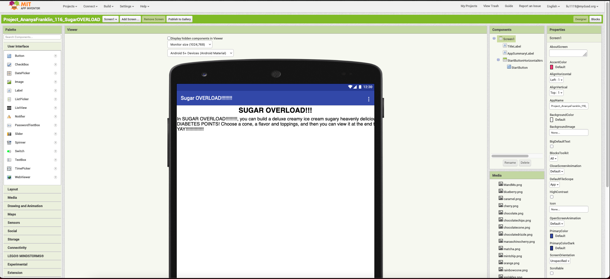

Projects
2022-03-07
Project 1:

App Development: Creative Expression
2021-10-21
This project is a game, built with MIT App Inventor, that allows the player to build an ice cream dessert and “eat” it by tapping on the finished dessert. Working on this project taught me about canvases, user input and some rough graphic design. Several challenges I had to overcome were struggling to use MIT App Inventor and realizing in the middle of coding that there was a much better approach, but the deadline was coming up, so I had to decide that whatever works works.
Project 2 Content:

ssg.py
2022-03-02
ssg.py is a static site generator, written in python. It takes a source directory containing Markdown files, converts them to html using the pandoc tool, creates a sitemap, RSS and Atom feeds, and writes them to a destination directory. It is specifically useful for computer users familiar with the command line, and I wrote it in Python for readability and stability. I personally use it to generate my website, fezhead.xyz. Working on this project taught me more about many advanced Python features, such as format strings, regular expressions, sets and file I/O. Several challenges I had to overcome were: struggling to understand the many types of regex out in the wild, many bugs cropping up in unexpected places, and using many libraries with which I had no previous experience.